Formamos
músicos con
propósito
El Centro Intercultural de Arte y Música que une excelencia técnica y fundamento espiritual. Con sedes en Cajabamba, Puyo y Guaranda, ofrecemos programas en más de 10 instrumentos y teoría musical.
Formar músicos y ministros de alabanza con excelencia, un corazón sensible a la adoración y el compromiso de impactar su comunidad.
Descubre tu talento
De principiante a ministro de alabanza, formamos cada etapa de tu camino musical con pedagogía y corazón.
Piano y Teclados
Clásico, contemporáneo y acompañamiento ministerial. Aprende armonía y técnica.
Guitarra
Domina acordes, arpegios, solos y el sonido de la alabanza moderna.
Canto
Respiración, afinación, proyección y el desarrollo único de tu voz.
Una academia con propósito
Desde 2015, C.I.A.M. Adora-Sión nació del sueño de crear un espacio donde la excelencia musical y la fe convergen. Hoy servimos en tres sedes, formando músicos que impactan sus iglesias y comunidades.

Misión
Formar músicos y ministros con excelencia técnica y fundamento espiritual.

Visión
Ser la academia de referencia en formación musical y ministerial del Ecuador.

Valores
Fe, excelencia, comunidad y un corazón sensible a la adoración.

Sedes
Cajabamba, Puyo y Guaranda, al servicio de toda la región central.
Tu camino en 3 pasos

Completa el formulario
Llena tus datos y selecciona tu sede y curso de interés.

Espera la confirmación
Un coordinador te contactará por WhatsApp para guiarte.

Formaliza tu matrícula
Agenda tu cita y comienza tu formación musical.
Concierto Adorarte 2026
Culminación de la temporada musical en la Extensión Guaranda
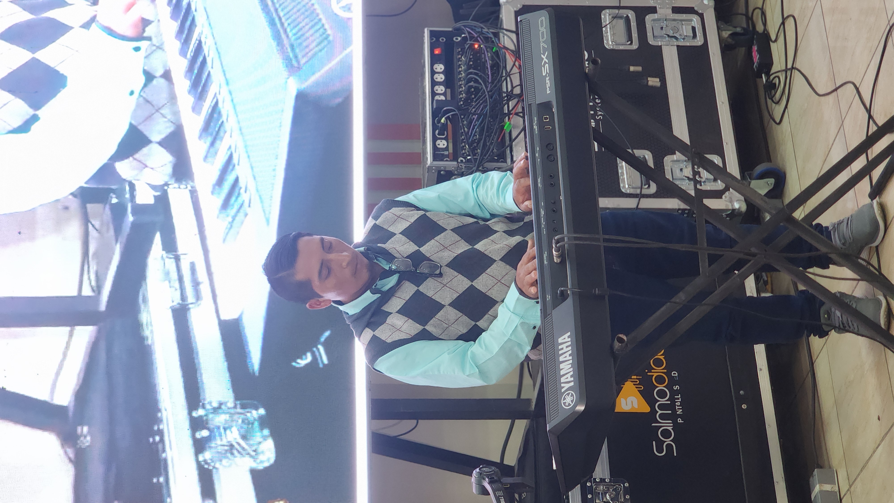
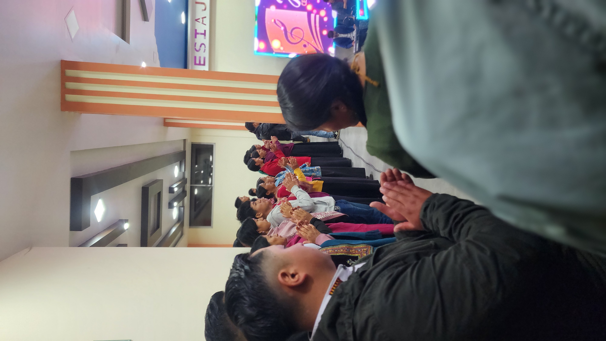
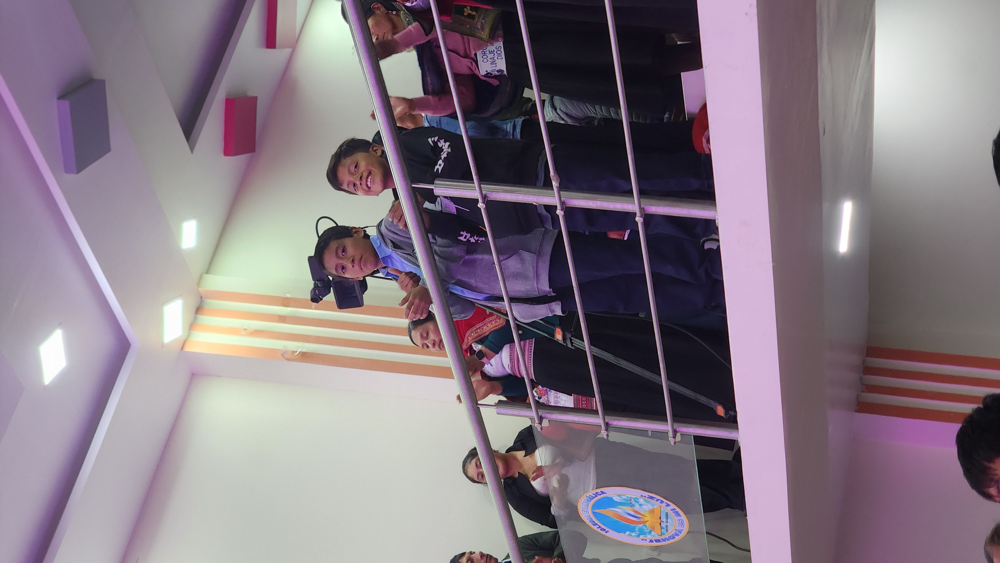
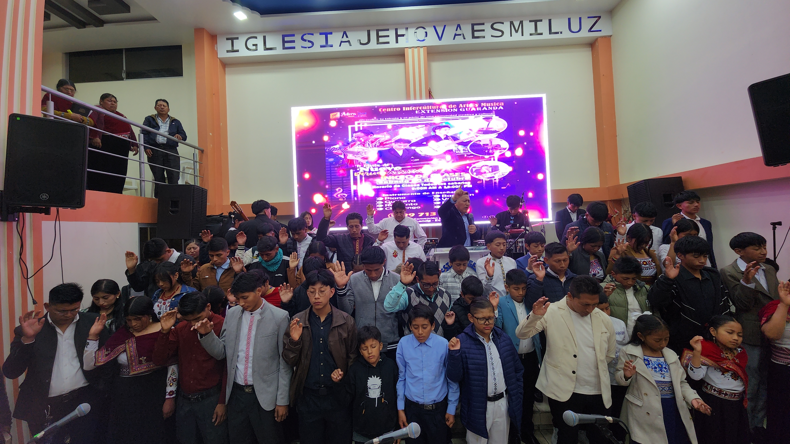
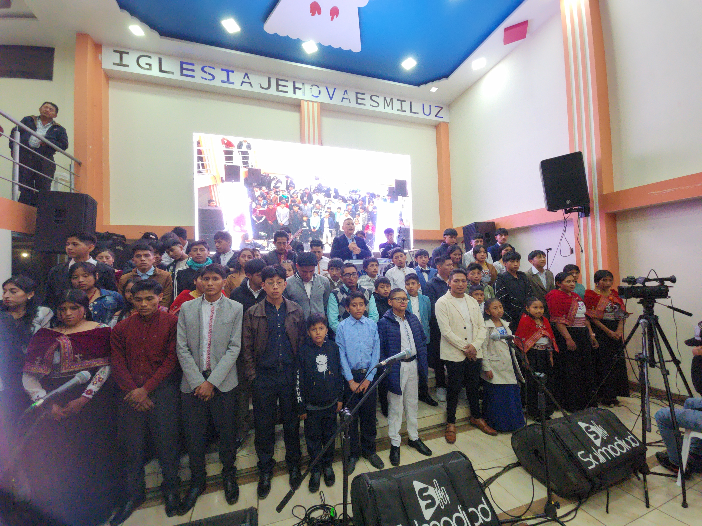
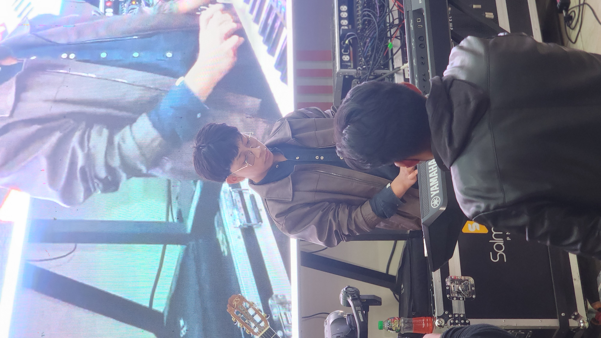
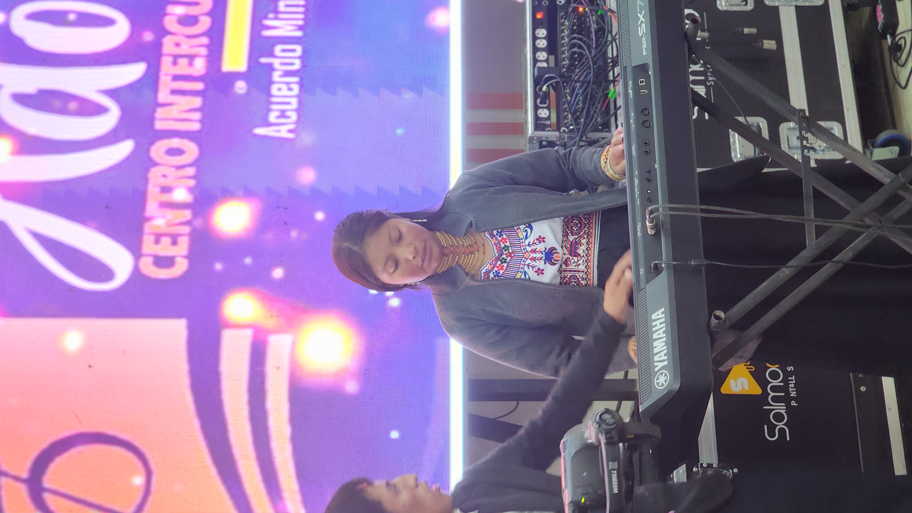
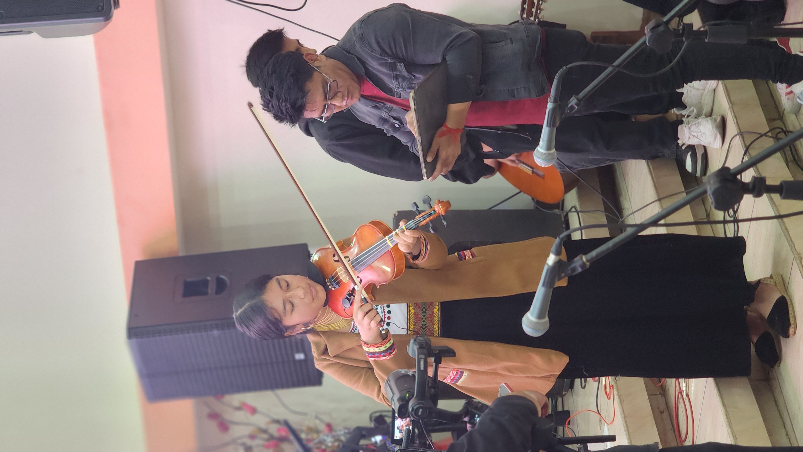
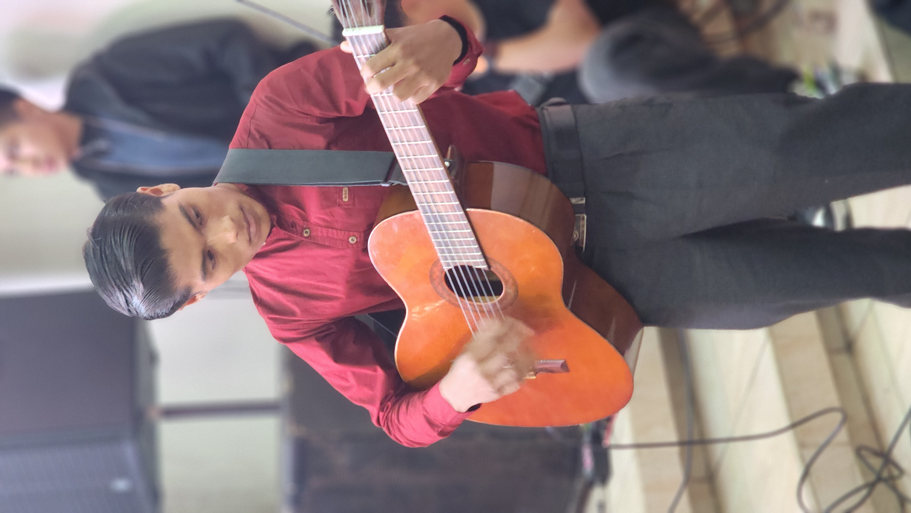
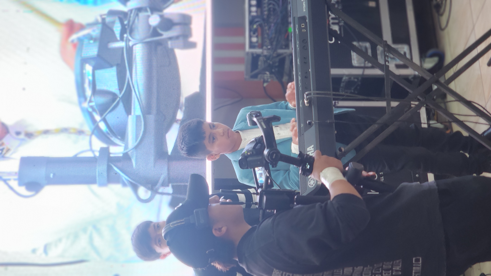
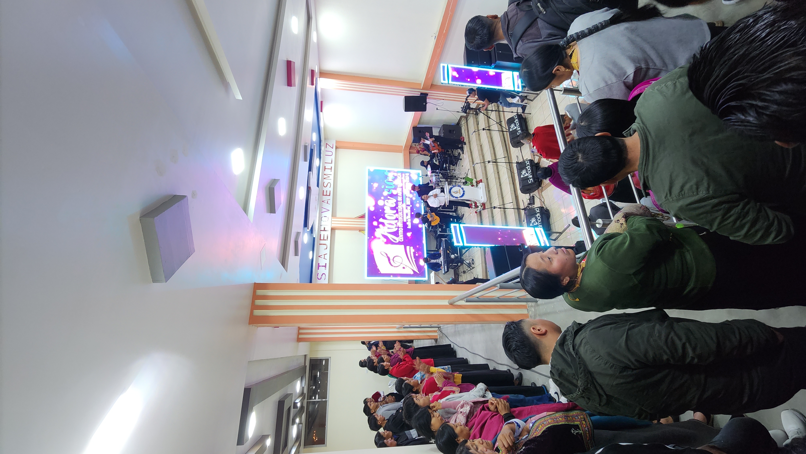
Tu talento merece cultivarse
Da el primer paso hacia una formación musical integral. Inscripción abierta en todas nuestras sedes.